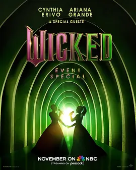

0.0
魔法坏女巫：奇幻之夜
Wicked: One Wonderful Night
2025
美国
评分 0.0
导演:
保罗·达格代尔 / 凯恩·萨菲亚里 / 克里斯多夫·斯科特
演员:
辛西娅·埃里沃 / 爱莉安娜·格兰德 / 杨紫琼 / 杰夫·高布伦 / 伊迪娜·门泽尔
类型:
歌舞,音乐
剧情简介
夜幕下，霓虹与聚光灯交织成一条通向魔法国度的黄金大道。全城瞩目的特别演出《Wicked: One Wonderful Night》在洛杉矶的多比剧院火热开场。辛西娅·埃里沃和爱莉安娜·格兰德携手登台，一曲“Defying Gravity”瞬间让空气凝住，观众屏息凝视。舞台背后，杨紫琼与杰夫·高布伦相继亮相，用精妙的节拍与优雅的步伐交织出一场视觉与听觉的盛宴。演出将电影版《Wicked》及即将上映续作的经典歌曲串联起来。笑声在乐章之间起伏，掌声在旋律尾音中延长。台前幕后，演员们既是歌手，也是魔法的叙述者，他们用声音唤醒奇幻世界的神秘。炬火式的灯光掠过台上每一张生动的表情；舞台升降、投影变换，仿佛将绿皮女巫与善良女巫的宿命故事，带入观众脚下。当“Popular”转为“Thank Goodness”，当“I'm Not That Girl”在光影中复刻旧日阴影，演出不仅是演唱，更像是一段旅程——穿越友谊、背叛、成长、决断。每一次高音爆发、每一次缓歌低吟，都在诉说：即使被贴上“坏女巫”的标签，她们依旧有选择自己道路的权利。舞台尽头，观众被拉入一个更大的魔法叙事中——这不仅是庆典，更是前奏，正为《Wicked: For Good》的登场预热。